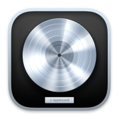

Welcome!
View on Mobile!
What are DAWs?
DAW stands for digital audio workstation.
It’s a type of music production software that functions as the computer-based hub of a music studio.Combined with other software and hardware tools and instruments, producers can use DAWs to compose, record, and mix music of any genre.
There are many different DAWs on the internet, some of the most famous ones include:
- Ableton
- Pro Tools
- FL Studio
- Logic Pro
DAW Websites
To visit the websites of each DAW, click their logo!

Instruments
What are instruments in FL Studio?
To make different sound effects and noises in a DAW such as FL Studio, one can either uses built-in virtual instruments or external Plugins.These instruments can be used in a variety of ways to manipulate and create various sounds across different genres
Some built-in instruments include the following:
- FLEX
- FL Keys
FLEX
FLEX is awesome!
A versatile instrument that offers a wide range of presets and sounds, including synths, pads, and basses.It is designed to be user-friendly and provides quick access to a variety of sounds.
Click a sound to listen to some of the FLEX synth sounds!
FL Keys
Let's try some piano!
A piano instrument that emulates the sound of a grand piano, electric piano, and other keyboard instruments.It's perfect for adding realistic piano sounds to your tracks.
Try this piano simulation for FL Keys! Try to hit as many falling notes as possible as they fall onto the piano!
C
D
E
F
G
A
B
C#
D#
F#
G#
A#
SCORE: 0
Notes
Notes are the foundation!
The piano roll tool is the most important tool in a DAW as it determines the notes and chords to be played at the different sections of the song.Placing down keys is as simple as clicking the part of the keyboard that represents the note that you want to play.
Additionally, DAWs such as FL Studio provide handy tools to modify the keys.
Such tools include:
- Velocity
- Slide
- Pan
Velocity
Control your volume!
This tool modifies the strength at which the note is played (generally, higher velocity notes are louder)Slide
Add swing and groove!
This tool allows for a smooth transition between different notes, otherwise known as "sliding", to increase or decrease the pitch from one note to another.This is especially useful for songs that need an extra bit of swing and charm!
Pan
Add atmosphere!
This tool allows producers to change the direction from which the sound comes from in a stereo channel.For instance, turning the pan to the left makes the audio sound like it is coming from the left.
Be sure to have headphones on!
What is Mixing?
Mixing is...
Mixing is often one of the final steps in music production.It is the process of combining and ajusting audio tracks to create a final, cohesive song.
This often involves balancing different effects of individual instruments and sound effects such as the following:
- Equalization
- Compression
- Reverb
Equalization
Make your music sound better!
This is often seen as the most important component of mixing.Equalization (EQ) refers to the process of adjusting the volume and level of different frequency bands with an audio signal.
Frequency Bands
Audio is composed of various frequencies.
To simplify: Low frequencies tend to be the lower-pitched sounds and high frequencies tend to be the higher-pitched sounds.
Hence, increasing low frequency band volumes make the bass louder and increasing high frequency band volumes make treble louder!
To simplify: Low frequencies tend to be the lower-pitched sounds and high frequencies tend to be the higher-pitched sounds.
Hence, increasing low frequency band volumes make the bass louder and increasing high frequency band volumes make treble louder!
Compression
Louder and softer!
Compression is a technique that reduces the dynamic range of an audio signal, making loud parts quieter and quiet parts louder.This essentially evens out the volume levels, making the sound more consistent!
Although this effect is often not noticeable, it helps keep a song with many other different sounds feel cohesive with each other.
Reverb
Add presence!
Reverberation ('Reverb' for short) is the effect of sounds creating a series of echoes that gradually fade away.A common favourite mixing effect, it adds depth and spaciousness to a sound, making it feel like it's being played in a particular environment, from a small room to a large hall.